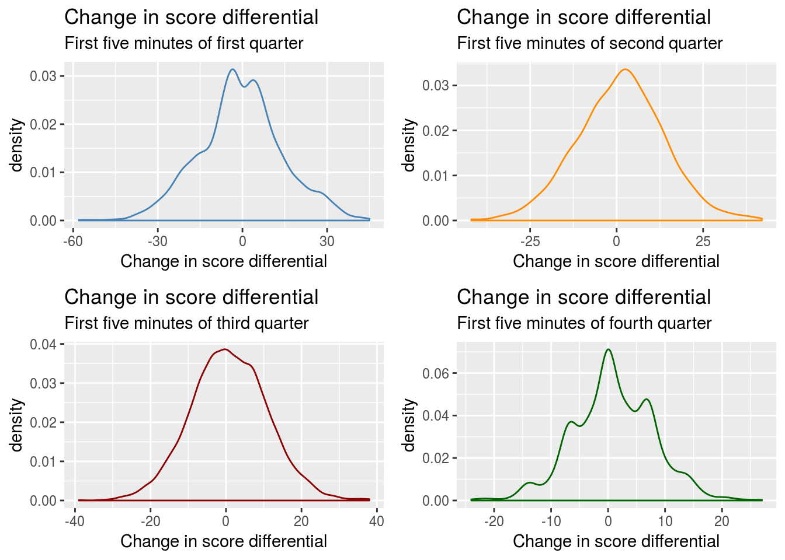
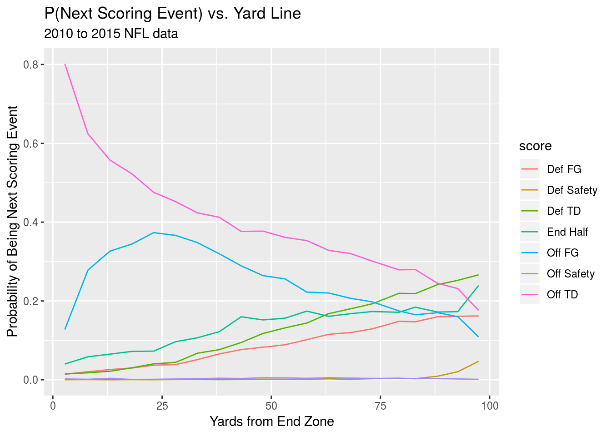
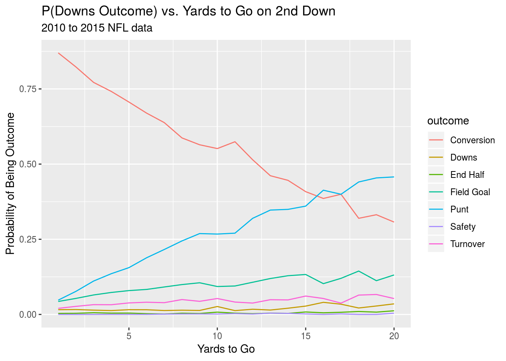
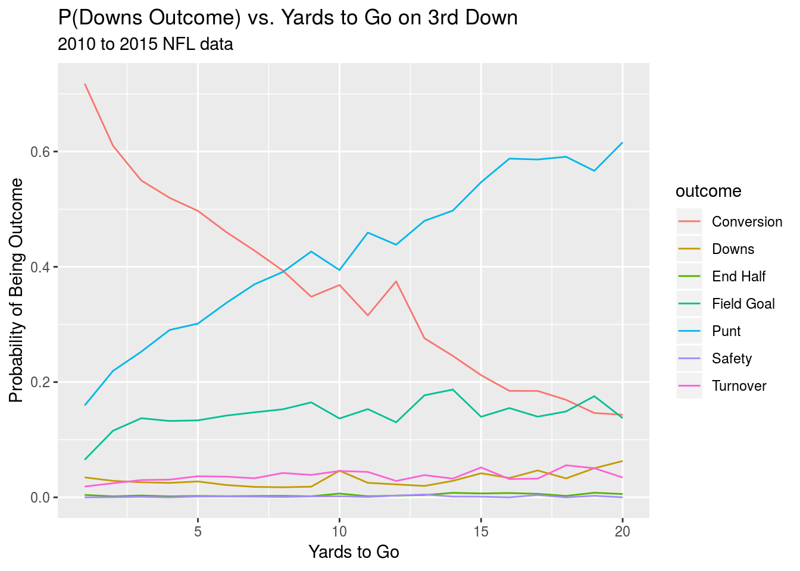

Chapter 1 Data
1.1 Description of the Play-by-Play Data
The play-by-play dataset comes from the NFL JSON API courtesy of the nflscrapR package, developed by Maksim Horowitz and Ron Yurko, which gives R users the API data in an easily digestible data frame. This package was used to compile a dataset of every play from the 2010 through 2017 NFL seasons. The dataset includes a number of variables that describe the game state including down, yards to go until a first down, yard line, and seconds remaining. The dataset also contains many variables that were helpful when it came to cleaning the data and adding features, including a description of each play that uses specific and consistent verbiage for different types of plays, making it easy to use text matching to search the dataset.
1.2 Cleaning the Data
Though the nflscrapR package simplified the complexities of pulling data from the NFL JSON API and formatted it nicely in a dataframe, the actual contents of the data was still a bit raw. We matched each game to a dataset of game outcomes and pre-game point spreads6 provided by The Prediction Tracker, and looked for discrepancies between the final score as listed in the play-by-play dataset and the point spread dataset. This allowed us to find games and plays in which the score was incremented incorrectly in the play-by-play dataset. We also looked for plays where the number of seconds remaining, the down or the field position changed from one play to the next in an incoherent manner to either fix or omit clearly erroneous entries.
1.3 Incorporating Other Datasets
Though the play-by-play dataset contains all the information one might need as far as describing the game state is concerned, it does not contain any information to describe the teams playing in each game. To remedy this issue we consulted several other datasets. We grabbed grades assigned to quarterbacks from 2008 through 2017 by Pro Football Focus (PFF) and pulled age, the pick at which a player was drafted, passing attempts and ESPN’s Total QBR from Pro Football Reference (PFR) to use in a model that projects the grade a quarterback will receive in a given season7. We also downloaded the aforementioned point spreads and game outcomes from The Prediction Tracker. Lastly, we also pulled week by week Defense-adjusted Value Over Average (DVOA) ratings for offense, defense and special teams from Football Outsiders through the use of a web scraping script. Each of these descriptors of team (or player) strength was mapped to the rows of the dataset that contained the appropriate team and week match as either a “Home Team” descriptor or an “Away team” descriptor. An example of some of the predictors in the data might look something like this:
| Point Spread | QB Home | QB Away | Off DVOA Home | Off DVOA Away | Def DVOA Home | Def DVOA Away |
|---|---|---|---|---|---|---|
| -3.0 | 68.4 | 80.9 | 10.4 | 2.3 | 18.7 | 1.4 |
| 4.5 | 72.6 | 69.9 | 1.6 | -2.9 | 17.5 | -5.4 |
| -3.0 | 62.6 | 76.9 | -17.7 | 3.9 | 0.0 | 1.6 |
| -5.5 | 70.2 | 91.5 | 5.2 | 9.7 | 29.2 | 11.3 |
| 7.0 | 72.9 | 71.2 | 19.8 | -1.8 | -26.6 | 6.5 |
Where “QB Home” and “QB Away” refer to the projected PFF grades for each team’s quarterback. The point spread, is the amount the home team is favored by8. These variables are transformed to describe the “possession team”—the team with the ball—and the defensive team when eventually used in models. Additionally, it is important to note that each value of DVOA is given a prior set to the pre-season projection of DVOA for the team in question. This prevents early season games from leading to extreme values for DVOA. The prior has a weight of four games9.
1.4 Exploratory Data Analysis
To get a sense of whether or not the assumption made by PFR that the change in score differential at a given point in a game is normally distributed we plot the density of change in score differential for the first five minutes of each quarter. We only sample data points from kickoffs in order to give equal weight to each unique score, game pair in each dataset.

We next take a look at how the absolute value of change in score differential scales as the game goes on, again sampling only from kickoffs.This should give a sense of whether or not variance scales as the game progresses.

We also take a look at the probability of the next scoring play being of a given type based on the yardline the ball is currently positioned at, this time for all first down plays. This will give an idea of whether the relationship between yard line and next scoring event is linear for different events.

Finally, we’ll take a look at how the probability of different outcomes on a given set of downs changes with the yards to go. We’ll output graphs for both first and second down.

The pre-game lines were usually compiled on Sunday mornings according to the steward of the website so they will occasionally differ from the closing line↩
This model is included in the appendix↩
Negative amounts signal that the away team is favored↩
This prior was chosen as a sort of average of the game weights that Football Outsiders assigns to its pre-season projection prior which diminish as the season goes on and range from one to nine games↩